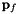
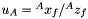

3D Cartesian Triangulation
We wish to create a solvable linear system that can give us an initial guess for the 3D cartesian position of our feature. To do this, we take all the poses that the feature is seen from to be of known quantity. This feature will be triangulated in some anchor camera frame which we can arbitrary pick. If the feature  is observed by pose , given the anchor pose  , we can have the following transformation from any camera pose :
, we can have the following transformation from any camera pose :
In the absents of noise, the measurement in the current frame is the bearing and its depth . Thus we have the following mapping to a feature seen from the current frame:
We note that  and represent the undistorted normalized image coordinates. This bearing can be warped into the the anchor frame by substituting into the above equation:
and represent the undistorted normalized image coordinates. This bearing can be warped into the the anchor frame by substituting into the above equation:
To remove the need to estimate the extra degree of freedom of depth , we define the following vectors which are orthoganal to the bearing :
All three rows are perpendicular to the vector and thus . We can then multiple the transform equation/constraint to form two equation which only relates to the unknown 3 d.o.f :

By stacking all the measurements, we can have:
Since each pixel measurement provides two constraints, as long as , we will have enough constraints to triangulate the feature. In practice, the more views of the feature the better the triangulation and thus normally want to have a feature seen from at least five views. We could select two rows of the each to reduce the number of rows, but by having a square system we can perform the following "trick".
This is a 3x3 system which can be quickly solved for as compared to the originl 3mx3m or 2mx2m system. We additionally check that the triangulated feature is "valid" and in front of the camera and not too far away. The condition number of the above linear system and reject systems that are "sensitive" to errors and have a large value.
1D Depth Triangulation
We wish to create a solvable linear system that can give us an initial guess for the 1D depth position of our feature. To do this, we take all the poses that the feature is seen from to be of known quantity along with the bearing in the anchor frame. This feature will be triangulated in some anchor camera frame which we can arbitrary pick. We define it as its normalized image coordiantes in tha anchor frame. If the feature is observed by pose , given the anchor pose , we can have the following transformation from any camera pose :
In the absents of noise, the measurement in the current frame is the bearing and its depth .
We note that and represent the undistorted normalized image coordinates. This bearing can be warped into the the anchor frame by substituting into the above equation:
To remove the need to estimate the extra degree of freedom of depth , we define the following vectors which are orthoganal to the bearing :
All three rows are perpendicular to the vector and thus . We can then multiple the transform equation/constraint to form two equation which only relates to the unknown :
We can then formulate the following system:
This is a 1x1 system which can be quickly solved for with a single scalar division. We additionally check that the triangulated feature is "valid" and in front of the camera and not too far away. The full feature can be reconstructed by .
3D Inverse Non-linear Optimization
After we get the triangulated feature 3D position, a nonlinear least-squares will be performed to refine this estimate. In order to achieve good numerical stability, we use the inverse depth representation for point feature which helps with convergence. We find that in most cases this problem converges within 2-3 iterations in indoor environments. The feature transformation can be written as:

We define , , and to get the following measurement equation:
The feature measurement seen from the camera frame can be reformulated as:
Therefore, we can have the least-squares formulated and Jacobians:
The least-squares problem can be solved with Gaussian-Newton or Levenberg-Marquart algorithm.